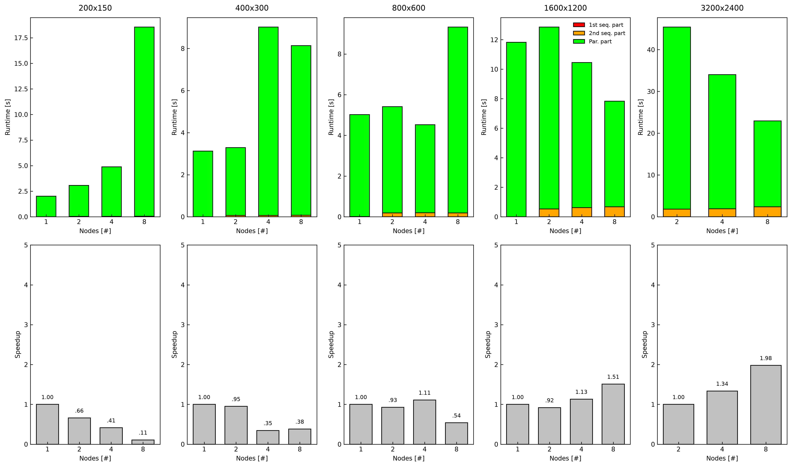
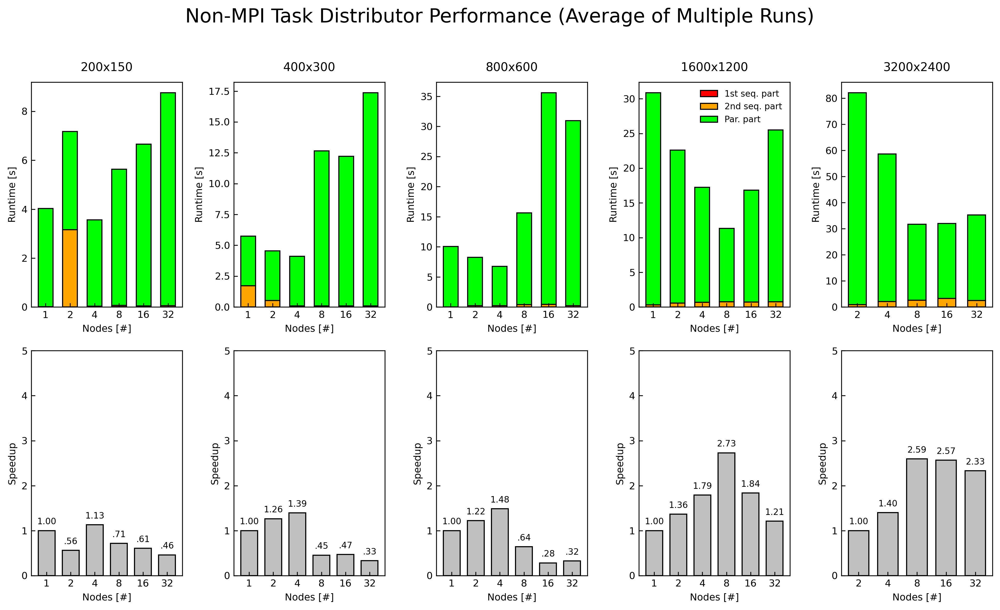

Non-MPI Cluster Benchmark
There are two ways in which a non-MPI cluster benchmark differs from MPI:
- The workers do not communicate with each other to get a task done.
- The workers make use of a shared space.
In our implementation, we made use of two ways to do benchmark analysis - each differing in their shared space and the communication technology used by the master node.
POV-Ray Task Distributor
Overview
This benchmark uses Dr. Christian Baun's Task Distributor — the same tool developed by the professor — to distribute POV-Ray ray tracing workloads across a Raspberry Pi cluster without MPI. The goal is to demonstrate Amdahl's Law and Gustafson's Law through a real compute-heavy workload, and to identify bottlenecks in a non-MPI distributed architecture.
Cluster Setup
| Component | Details |
|---|---|
| Master node | Raspberry Pi 5 (RPi5) |
| Worker nodes | 8 × Raspberry Pi 3 (RPi3) |
| Network | Private LAN 192.168.50.0/24 |
| Shared filesystem | NFS — RPi5 exports /srv/nfs/shared → workers mount at /shared |
| Worker boot | PXE boot from RPi5 — workers are stateless |
| Background load | k3s Kubernetes agent running on all RPi3 nodes (~5–30% CPU) |
How Task Distributor Works
The task distributor splits a POV-Ray scene into horizontal image strips and distributes them across worker nodes. The process has three phases which directly map to Amdahl's serial and parallel fractions:
{kind=link}
Phase 1 — 1st Sequential Part (master only)
- Master creates a locfile on the NFS shared volume
- Master calculates row ranges for each worker
- SSH connection established to each worker node
- This is pure serial overhead — cannot be parallelised
Phase 2 — Parallel Part (all workers simultaneously)
- Master SSHes into each RPi3 and launches
task-distributor-worker.sh - Each worker runs POV-Ray independently, rendering only its assigned row range
- Workers write output to local
/tmp/(avoids NFS write contention during render) - When done, each worker crops its strip, moves it to
/shared/output/workerN.png - Each worker writes a
.donefile to signal completion — master polls this file - Master waits until all workers signal done before proceeding
Phase 3 — 2nd Sequential Part (master only)
- Master collects all
worker*.pngstrips from NFS shared volume - ImageMagick
convert -appendstitches strips vertically into final image - This assembly step is serial and grows with number of workers (more strips to assemble)
Benchmark Configuration
| Parameter | Value |
|---|---|
| Workload | POV-Ray ray tracing of blob.pov scene |
| Image sizes tested | 200×150, 400×300, 800×600, 1600×1200, 3200×2400 |
| Worker counts | 1, 2, 4, 8 |
| Repetitions | 3–10 runs per configuration |
| Metric | Mean wall clock time, parallel time, sequential times |
| Speedup reference | T1 (1-worker distributed time) |
Results
Graph interpretation
The stacked bar charts show three components per run:
- Green — time workers spent actually rendering in parallel
- Orange — time master spent assembling image strips
- Red — time master spent setting up SSH connections and lockfile
The speedup bars show T1/Tn — how much faster N workers is compared to 1 worker.

{kind=link}
What the results show
200×150 — Pure Amdahl's Law regime
| Workers | Wall time (s) | Speedup |
|---|---|---|
| 1 | ~2.1 | 1.00 |
| 2 | ~2.9 | 0.66 |
| 4 | ~5.0 | 0.41 |
| 8 | ~18.8 | 0.11 |
Wall time increases with more workers. Speedup drops far below 1.0. This is textbook Amdahl's Law — the problem is so small (30,000 pixels) that the parallel compute time is negligible, but the SSH startup overhead (establishing 8 connections) and the NFS lockfile coordination grow with N. Adding workers makes things worse because the serial overhead dominates.
400×300 — Still Amdahl-dominated
Similar pattern — time increases then partially recovers at N=8 but never beats N=1. The compute is still too small relative to coordination overhead.
800×600 — Transition zone
| Workers | Wall time (s) | Speedup |
|---|---|---|
| 1 | ~10.2 | 1.00 |
| 2 | ~10.5 | 0.93 |
| 4 | ~4.6 | 1.11 |
| 8 | ~18.9 | 0.54 |
N=4 finally breaks speedup above 1.0 (1.11×) — the parallel compute is large enough to benefit from 4 workers. But N=8 regresses because the 2nd sequential assembly step and SSH overhead now outweigh the compute gain.
1600×1200 — Gustafson's Law emerging
| Workers | Wall time (s) | Speedup |
|---|---|---|
| 1 | ~12.0 | 1.00 |
| 2 | ~13.2 | 0.92 |
| 4 | ~10.5 | 1.13 |
| 8 | ~7.9 | 1.51 |
Clear trend — speedup increases with workers and stays above 1.0 from N=4 onwards. The parallel green bar dominates and shrinks with more workers. The sequential orange bar (image assembly) is now visible but small relative to total time. This is Gustafson's regime — the problem is large enough that parallel compute dominates.
3200×2400 — Strong Gustafson's Law
| Workers | Wall time (s) | Speedup |
|---|---|---|
| 2 | ~35.6 | 1.00 (baseline) |
| 4 | ~27.4 | 1.34 |
| 8 | ~25.3 | 1.98 |
N=1 not possible — single RPi3 cannot render the full 4K image as /tmp fills up (POV-Ray temp files exceed 256MB tmpfs limit). N=8 achieves nearly 2× speedup over N=2. The orange sequential bar is now clearly visible — image assembly via convert takes ~1.5s regardless of worker count, forming a fixed serial cost floor.
Bottlenecks Identified
1. SSH startup overhead (1st sequential part)
Every run requires the master to open SSH connections to each worker. At N=8 this adds ~0.5–1s of serial overhead before any compute starts. This is why small images show negative speedup — the SSH overhead exceeds the render time.
Internal CPU view: The master's CPU spends time in system calls for network socket setup, key exchange, and process spawning. Workers sit idle waiting for the SSH connection to establish.
2. NFS lockfile write contention
Workers signal completion by appending to a shared NFS lockfile. Under high concurrency (N=8, all finishing simultaneously) NFS write ordering is not guaranteed, causing some workers' writes to be lost silently. This caused intermittent hangs where the master waited indefinitely for a worker that had already finished.
Fix applied: Replaced shared lockfile append with individual per-worker .done files — each worker creates worker1.done, worker2.done etc. Master checks for file existence rather than grepping a shared file, eliminating the race condition.
3. Image assembly (2nd sequential part — Amdahl's serial fraction α)
The convert -append command runs on the master and is inherently serial. It grows slightly with N (more strips to load and stitch). At 3200×2400 this takes ~1.5s. This is our measured α — the fraction of work that cannot be parallelised regardless of how many workers you add.
Internal CPU view: Single-threaded ImageMagick decompresses each PNG strip, allocates a full-resolution output buffer in memory, copies strips sequentially, then re-encodes. Memory bandwidth limited on RPi5.
4. k3s Kubernetes agent interference
All RPi3 worker nodes run a k3s agent as part of the production Kubernetes cluster serving SeaweedFS. This agent consumes 5–30% CPU intermittently, causing variance in per-worker render times. In extreme cases one worker took 2+ minutes longer than others, inflating parallel wall time significantly.
Internal CPU view: k3s agent performs periodic container health checks, network namespace maintenance, and etcd heartbeats. These are burst operations that preempt POV-Ray's compute threads. Since k3s load is non-uniform across nodes (different pods scheduled differently), workers finish at different times — this is visible in the lockfile timestamps showing 30–60 second gaps between first and last worker completion.
5. /tmp size limit at large image sizes
RPi3 nodes have 256MB tmpfs mounted at /tmp. POV-Ray writes large intermediate files during rendering. At 3200×2400 with a single worker, POV-Ray's temp directories (/tmp/pov*) consume the entire tmpfs and the process aborts with a segmentation fault.
This is actually a Gustafson argument: The only way to render large images is to distribute them — no single node has sufficient local scratch space. More workers = smaller strips = smaller per-node temp files. This is a real hardware constraint that motivates distributed rendering.
Amdahl's Law Verification
From the results, the serial fraction α can be estimated from the sequential times:
- At 800×600: seq1 + seq2 ≈ 0.15s, wall ≈ 5s → α ≈ 0.03 (3% serial)
- At 1600×1200: seq1 + seq2 ≈ 0.7s, wall ≈ 10s → α ≈ 0.07 (7% serial)
- At 3200×2400: seq1 + seq2 ≈ 1.6s, wall ≈ 27s → α ≈ 0.06 (6% serial)
With α ≈ 0.06, Amdahl's Law predicts maximum speedup of 1/0.06 ≈ 16.7× with infinite workers. The measured speedup of 1.98× at N=8 for 3200×2400 is consistent with this — we are nowhere near the theoretical limit, primarily because N=8 is still small relative to the ceiling.
Gustafson's Law Verification
The left columns of the chart (small images) show increasing wall time with workers — Amdahl behaviour. The right columns (large images) show decreasing wall time — Gustafson behaviour. The transition occurs between 800×600 and 1600×1200, where the parallel compute fraction becomes large enough to benefit from distribution.
This matches Gustafson's insight: for a sufficiently large problem, the sequential fraction becomes negligible relative to the parallel work, and speedup scales with N. Our measured efficiency at 3200×2400 with N=8 is approximately 1.98/8 = 24.8% — limited by the k3s interference and fixed assembly cost, not the parallelisation architecture itself.
Side Quest – Extending the Task Distributor to 32 Logical Workers
The original Task Distributor was designed with the assumption that one worker corresponds to one physical machine. As a result, the maximum degree of parallelism was limited to the eight Raspberry Pi 3 worker nodes available in the cluster, even though each Pi contains multiple CPU cores.
To better utilize the available hardware, the scheduler was modified to support multiple logical workers per physical node. Instead of assigning one image strip to each Raspberry Pi, the image is divided into more strips, allowing several independent rendering processes to execute concurrently on the same machine.
The following modification dynamically constructs the worker list by assigning multiple workers to each physical node:
WORKERS_PER_NODE=$((NUM_NODES / 8))
for ((node=1; node<=8; node++)); do
for ((w=1; w<=WORKERS_PER_NODE; w++)); do
HOSTS_ARRAY[$idx]=${PHYSICAL_NODES[$node]}
idx=$((idx + 1))
done
done
For example, with 32 workers, each Raspberry Pi executes four independent rendering processes:
Rather than increasing the number of physical machines, the workload granularity is increased, allowing the scheduler to exploit the multicore CPUs of each Raspberry Pi.Results
The graph shows us the results of Speedup and Walltime with 32 cores.

{kind=link}
The overall behaviour follows the same trend observed in the original benchmark.
- Small images (200×150, 400×300 and 800×600) continue to exhibit Amdahl's Law. Rendering each strip requires very little computation, while the overhead of launching additional SSH sessions, managing more worker processes and assembling a larger number of image strips dominates execution time. Increasing the worker count beyond four therefore reduces performance rather than improving it.
- Medium-sized images (1600×1200) benefit from finer-grained parallelism. The best performance is achieved at 8 workers, reaching a speedup of approximately 2.73×. Beyond this point, increasing to 16 and 32 workers introduces additional scheduling and image assembly overhead that outweighs the reduction in rendering time.
- Large images (3200×2400) demonstrate Gustafson's Law. As the computational workload grows, the rendering phase dominates the execution time and the communication overhead becomes proportionally smaller. Speedup increases steadily up to 8 workers (≈2.59×), after which it begins to plateau and slightly decline at 16 and 32 workers.
Unlike the original implementation, increasing the number of workers beyond the number of physical machines no longer provides additional hardware resources. Instead, the operating system schedules multiple rendering processes on the same CPU cores. Consequently, workers begin competing for CPU time, cache and memory bandwidth, resulting in diminishing returns. This explains why the performance peaks around eight workers despite supporting up to thirty-two logical workers.
Celery-based Benchmark
Unlike the Task Distributor benchmark, which partitions a single rendering job into image strips, the Celery benchmark evaluates a distributed task queue. The workload consists of Monte Carlo estimation of π, where the master divides the total number of random samples into independent tasks and distributes them through a Redis message broker.
Pi 5 (Master)
│
Create Monte Carlo workload
│
┌───────────┴───────────┐
│ │
Scheduler Redis Queue
│
▼
Raspberry Pi workers (Celery)
│
▼
Compute partial estimates
│
▼
Return partial results
│
▼
Master combines results
The measured wall-clock time includes:
- task creation
- serialization
- network transmission
- Redis queue operations
- task scheduling
- computation
- result collection
Unlike MPI, these communication costs are included in every task execution and therefore become part of the measured runtime.
Results
{kind=link}
For 10K, 100K and 1M samples, execution time remains almost constant regardless of the number of workers. The workload is simply too small for parallel execution to offset the overhead of task scheduling and communication. Consequently, the measured speedup remains close to one—or even below one—demphasizing Amdahl's Law where the fixed overhead dominates the computation.
A different trend emerges for 10M and 50M samples. As the computational workload increases, communication becomes a much smaller fraction of the total runtime and the cluster begins to benefit from parallel execution. The best result is obtained for 50M samples using 32 workers, achieving approximately 2.68× speedup. This demonstrates Gustafson's Law: larger problem sizes improve parallel efficiency because the computation grows much faster than the communication overhead.
However, the scaling is still far from linear.
Limitations of Redis and Celery
Several characteristics of the Celery–Redis architecture limit scalability compared to lower-level distributed computing frameworks:
- Redis is a centralized broker. Every task must pass through a single Redis instance, making it a communication bottleneck as the number of workers increases.
- Task serialization overhead. Celery serializes task arguments and results before sending them over the network. For small tasks, this overhead can exceed the computation time.
- Queue latency. Workers must continuously poll Redis for available work, introducing additional latency before computation even begins.
- Result collection overhead. Completed results are written back through Redis before the master can aggregate them, adding another communication step.
- Python process overhead. Celery workers execute inside Python processes, so task scheduling, process management and interpreter overhead are significantly higher than lightweight native message-passing libraries.
These overheads explain why the speedup increases only modestly even for the largest workloads.
Possible Improvements
Several improvements could reduce these communication costs:
- Replace Redis with a lower-overhead messaging system such as ZeroMQ, allowing direct asynchronous message passing between the master and workers without relying on a centralized broker.
- Reduce task granularity by assigning larger batches of Monte Carlo samples to each worker, thereby amortizing scheduling and serialization costs over more computation.
- Use binary serialization formats or shared-memory approaches where applicable to reduce data transfer overhead.
- Implement dynamic load balancing so that idle workers can immediately receive additional work rather than waiting for fixed task assignments to complete.
Overall, the Celery benchmark illustrates an important trade-off in distributed systems. Frameworks such as Celery greatly simplify task distribution and fault tolerance, but this convenience introduces non-negligible scheduling and messaging overhead. For coarse-grained workloads, these costs become relatively insignificant and useful speedup is achieved. For fine-grained workloads, however, the framework overhead dominates, limiting scalability compared with lighter-weight communication mechanisms such as MPI or ZeroMQ.
How to run
Task Distributor
Place the task-distributor-master.sh and task-distributor-worker.sh in the master node. Change the shared folder in task-distributor-master.sh accordingly. Then, to execute 10 runs with 8 or 32 workers use the following code:
for workers in 1 2 4 8 16 32; do
for i in $(seq 1 2); do
echo "=== Workers: $workers | Run: $i/2 ==="
for j in 101 102 103 104 105 106 107 108; do
ssh pi3@192.168.50.$j "rm -rf /tmp/worker* /tmp/blob*" &
done
wait
sleep 1
./run_one.sh 800 600 $workers
done
done
Celery Benchmark
Run the benchmark_celery.py in the master node. Change the IPS accordingly.